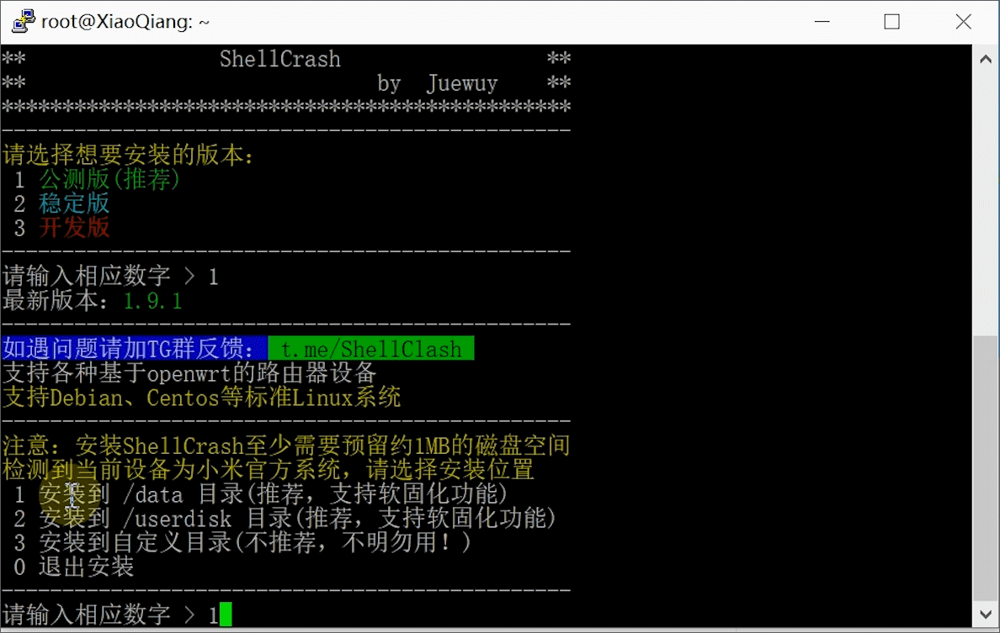

ShellClash更名为ShellCrash，是非常流行的代理软件，支持在路由器和Linux环境使用，安装配置非常便捷，界面友好。支持主流协议、Clash和新的内核。
ShellClash安装教程：▶ https://youtu.be/EINY7aD4S74
小米路由器首先要解锁SSH，才能安装ShellCrash， Github教程>>
复制 export url='https://fastly.jsdelivr.net/gh/juewuy/ShellCrash@master' && sh -c "$(curl -kfsSl $url/install.sh)" && source /etc/profile &> /dev/null
复制
#1
export url='https://raw.githubusercontent.com/juewuy/ShellCrash/master' && sh -c "$(curl -kfsSl $url/install.sh)" && source /etc/profile &> /dev/null
#2
export url='https://fastly.jsdelivr.net/gh/juewuy/ShellClash@master' && sh -c "$(curl -kfsSl $url/install.sh)" && source /etc/profile &> /dev/null
#3
export url='https://gh.jwsc.eu.org/master' && sh -c "$(curl -kfsSl $url/install.sh)" && source /etc/profile &> /dev/null
#4
export url='https://raw.githubusercontent.com/juewuy/ShellClash/master' && wget -q --no-check-certificate -O /tmp/install.sh $url/install.sh && sh /tmp/install.sh && source /etc/profile &> /dev/null
#5
export url='https://fastly.jsdelivr.net/gh/juewuy/ShellClash@master' && wget -q --no-check-certificate -O /tmp/install.sh $url/install.sh && sh /tmp/install.sh && source /etc/profile &> /dev/null
#6
export url='http://test.shellclash.cf' && wget -q -O /tmp/install.sh $url/install.sh && sh /tmp/install.sh && source /etc/profile &> /dev/null
putty下载>>
http://192.168.31.1:9999/ui（这是小米路由器默认IP）
第一步：使用 putty 登录路由器
第二步：复制粘贴 ShellCrash 安装源，点回车键，再输入1，点回车
第三步：输入1，点回车键

第四步：输入1，点回车键
第五步：ShellCrash安装完成，输入crash，点回车键
第六步：输入1，点回车键，接下来很多步骤都是输入1，点回车，如果不明白请看上面的视频教程
第七步：选择节点
第八步：已经可以科学上网
第九步：更新订阅节点